Development status
Derived: 0 legal tract maps recorded this year; 0 cumulatively. Not a physical lifecycle state.
LHDRS Evidence Publication | Second Edition
A source-traceable 1997-2010 reconstruction that distinguishes documented milestones from unavailable physical-development geometry.
Generated 2026-07-26.
Edition result
The legal-map, school, imagery, wind, terrain, graph, conflict, and gap layers are materially expanded. The first edition remains preserved. No active-construction, habitability, or occupancy polygon passed the evidence gate, so spatial proximity remains blocked.
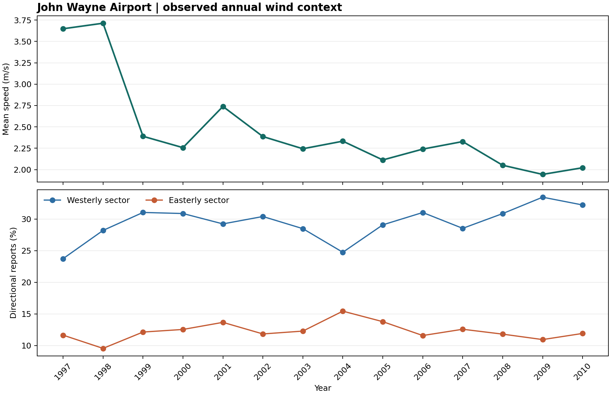
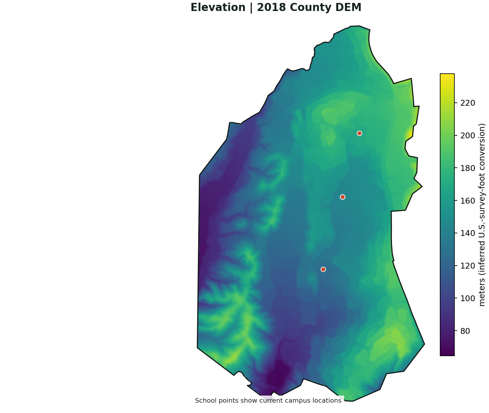
Annual reconstruction
approval recalled by developer
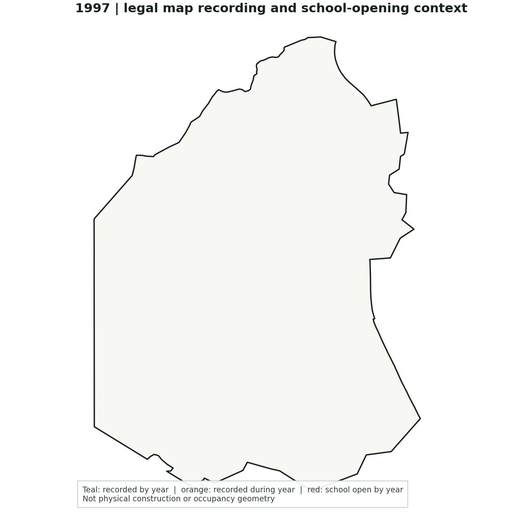
Derived: 0 legal tract maps recorded this year; 0 cumulatively. Not a physical lifecycle state.
No supported active-construction geometry. Empty means unsupported, not absent.
No supported residential geometry. Community milestones are not assigned to tracts or villages.
Open IDs: none. Historical attendance boundaries were not retrieved.
No new dated facility or infrastructure milestone.
partial ambiguous date. The County service's 1997 Date_On_Map and 1998 DateCurrent fields do not support two separate annual states.
Blocked. Zero comparisons calculated because subject and target geometry gates are unsatisfied.
John Wayne Airport: 3.648 m/s mean speed; 11.65% easterly; 23.73% westerly; 63.92% valid-speed coverage. Regional station context; not downscaled.
2018 median elevation 148.3 m; median slope 4.24 degrees. Post-study context, not a 1997 surface.
low. Annual records are evidence manifests; unchanged or unavailable fields do not imply historical absence.
LH-CONFLICT-EIR-APPROVAL-DATE
Construction, habitability, and occupancy geometry; attendance boundaries; historical facility footprints.
| Date | Milestone | Class | Confidence | Sources | Limits |
|---|---|---|---|---|---|
| 1997-01-01 | Developer retrospective places County approval in 1997 | documented_approximate | low | LH-SRC-RMV-PLANNING | Preserved as a source claim, not treated as the exact entitlement action |
development started
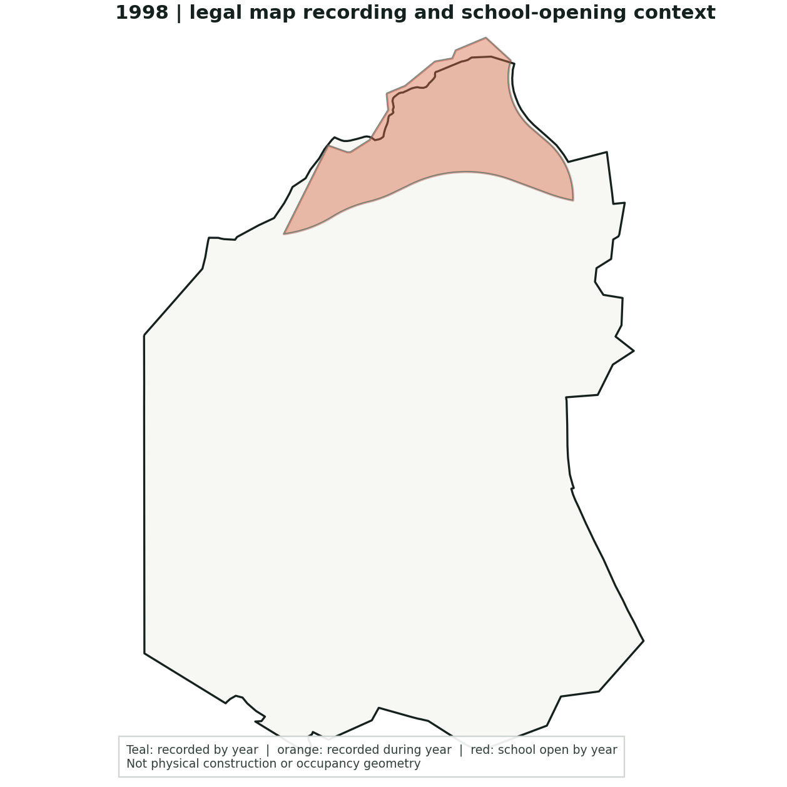
Derived: 1 legal tract maps recorded this year; 1 cumulatively. Not a physical lifecycle state.
No supported active-construction geometry. Empty means unsupported, not absent.
No supported residential geometry. Community milestones are not assigned to tracts or villages.
Open IDs: none. Historical attendance boundaries were not retrieved.
No new dated facility or infrastructure milestone.
partial ambiguous date. The County service's 1997 Date_On_Map and 1998 DateCurrent fields do not support two separate annual states.
Blocked. Zero comparisons calculated because subject and target geometry gates are unsatisfied.
John Wayne Airport: 3.713 m/s mean speed; 9.56% easterly; 28.19% westerly; 62.82% valid-speed coverage. Regional station context; not downscaled.
2018 median elevation 148.3 m; median slope 4.24 degrees. Post-study context, not a 1998 surface.
medium. Annual records are evidence manifests; unchanged or unavailable fields do not imply historical absence.
No year-linked conflict in the registry.
Construction, habitability, and occupancy geometry; attendance boundaries; historical facility footprints.
| Date | Milestone | Class | Confidence | Sources | Limits |
|---|---|---|---|---|---|
| 1998-01-01 | Development begins | documented_approximate | medium | LH-SRC-ULI-CASE | Substantial completion is separately dated to 2006 |
| 1998-04-07 | Original alternative development standards approved | documented_exact | high | LH-SRC-OC-ADS | Regulatory milestone only |
first sales and occupancy
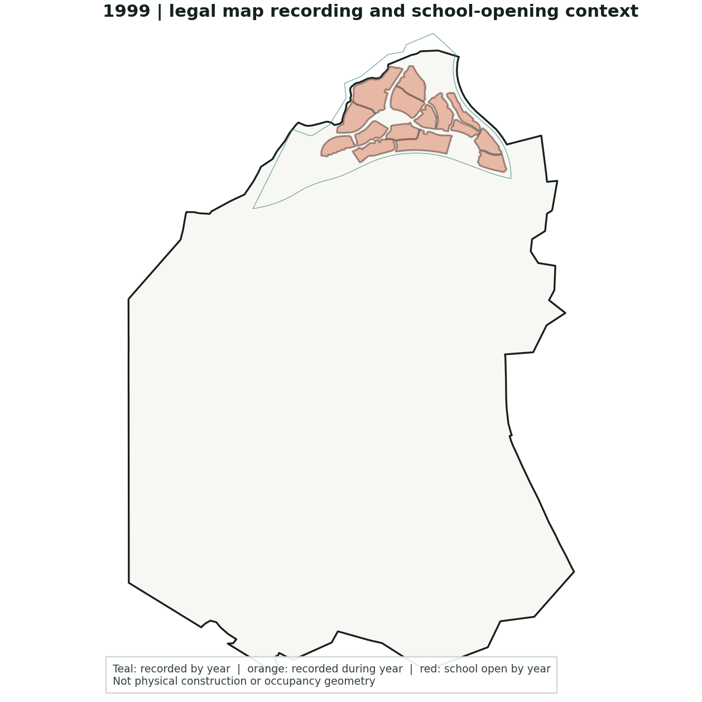
Derived: 14 legal tract maps recorded this year; 15 cumulatively. Not a physical lifecycle state.
No supported active-construction geometry. Empty means unsupported, not absent.
No supported residential geometry. Community milestones are not assigned to tracts or villages.
Open IDs: none. Historical attendance boundaries were not retrieved.
Phase 1 utility environmental record received
not located. No public, locally archived image supports an annual state; zero coverage is not evidence of no construction.
Blocked. Zero comparisons calculated because subject and target geometry gates are unsatisfied.
John Wayne Airport: 2.390 m/s mean speed; 12.14% easterly; 31.03% westerly; 91.69% valid-speed coverage. Regional station context; not downscaled.
2018 median elevation 148.3 m; median slope 4.24 degrees. Post-study context, not a 1999 surface.
medium. Annual records are evidence manifests; unchanged or unavailable fields do not imply historical absence.
No year-linked conflict in the registry.
Construction, habitability, and occupancy geometry; attendance boundaries; historical facility footprints.
| Date | Milestone | Class | Confidence | Sources | Limits |
|---|---|---|---|---|---|
| 1999-03-09 | Phase 1 utility environmental record received | documented_exact | high | LH-SRC-CEQANET-UTILITIES | Includes domestic and nondomestic water sewer force mains pump station and lift station |
| 1999-03-09 | Alternative development standards approval | documented_exact | high | LH-SRC-OC-ADS | Regulatory milestone only |
| 1999-08-01 | Dirt Tour sales begin | documented_exact | medium | LH-SRC-LARMAC-TIMELINE | Exact day not published |
| 1999-10-01 | 93 new homes sold | documented_exact | medium | LH-SRC-LARMAC-TIMELINE | Sales figure awaits original sales ledger corroboration |
| 1999-12-14 | First resident moves in | documented_exact | medium | LH-SRC-LARMAC-TIMELINE | Community-level event; village assignment is not encoded without a primary occupancy record |
LH-SRC-CEQANET-UTILITIES LH-SRC-LARMAC-TIMELINE LH-SRC-OC-ADS
active construction and occupancy
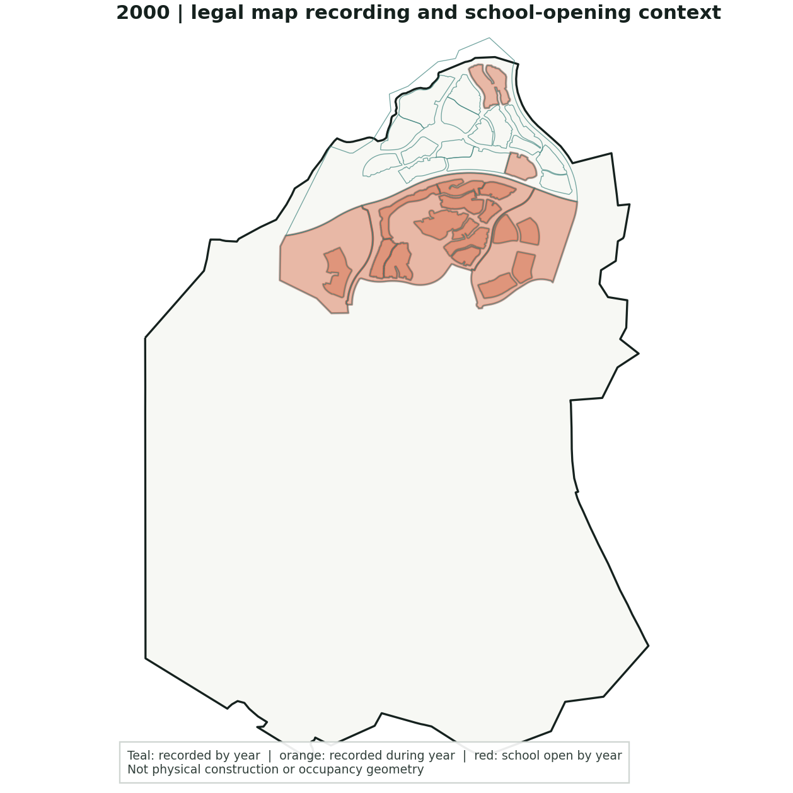
Derived: 20 legal tract maps recorded this year; 35 cumulatively. Not a physical lifecycle state.
No supported active-construction geometry. Empty means unsupported, not absent.
No supported residential geometry. Community milestones are not assigned to tracts or villages.
Open IDs: none. Historical attendance boundaries were not retrieved.
Oak Knoll Clubhouse opens
not located. No public, locally archived image supports an annual state; zero coverage is not evidence of no construction.
Blocked. Zero comparisons calculated because subject and target geometry gates are unsatisfied.
John Wayne Airport: 2.257 m/s mean speed; 12.55% easterly; 30.86% westerly; 91.34% valid-speed coverage. Regional station context; not downscaled.
2018 median elevation 148.3 m; median slope 4.24 degrees. Post-study context, not a 2000 surface.
medium. Annual records are evidence manifests; unchanged or unavailable fields do not imply historical absence.
No year-linked conflict in the registry.
Construction, habitability, and occupancy geometry; attendance boundaries; historical facility footprints.
| Date | Milestone | Class | Confidence | Sources | Limits |
|---|---|---|---|---|---|
| 2000-02-28 | Chief County Engineer approves standards supplement 3 | documented_exact | high | LH-SRC-OC-ADS | Regulatory milestone only |
| 2000-03-01 | 562 total new homes sold | documented_exact | medium | LH-SRC-LARMAC-TIMELINE | Timeline reports 469 new and 562 total |
| 2000-03-01 | Oak Knoll Clubhouse opens | documented_exact | medium | LH-SRC-LARMAC-TIMELINE | Exact day not published |
active construction and occupancy
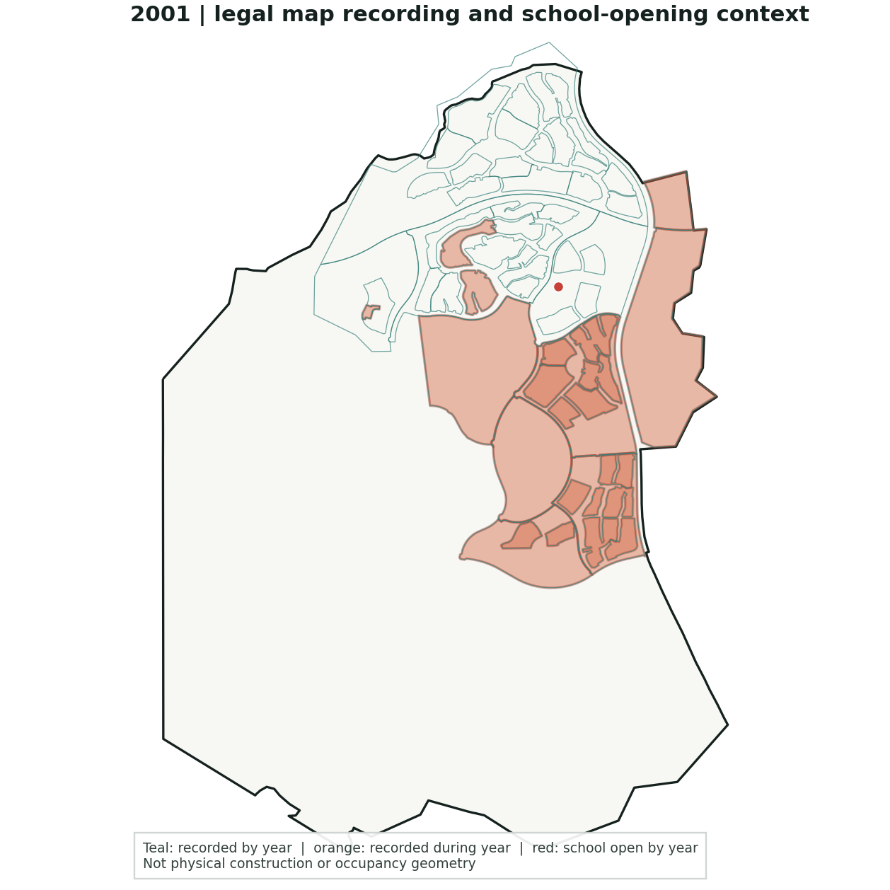
Derived: 24 legal tract maps recorded this year; 59 cumulatively. Not a physical lifecycle state.
No supported active-construction geometry. Empty means unsupported, not absent.
No supported residential geometry. Community milestones are not assigned to tracts or villages.
Open IDs: LH-SCHOOL-CHAPARRAL. Historical attendance boundaries were not retrieved.
Ladera Ranch Sports Park opens; Chaparral Elementary opens; Bridgepark Plaza opens; Town Green opens
not located. No public, locally archived image supports an annual state; zero coverage is not evidence of no construction.
Blocked. Zero comparisons calculated because subject and target geometry gates are unsatisfied.
John Wayne Airport: 2.739 m/s mean speed; 13.67% easterly; 29.22% westerly; 80.92% valid-speed coverage. Regional station context; not downscaled.
2018 median elevation 148.3 m; median slope 4.24 degrees. Post-study context, not a 2001 surface.
medium. Annual records are evidence manifests; unchanged or unavailable fields do not imply historical absence.
No year-linked conflict in the registry.
Construction, habitability, and occupancy geometry; attendance boundaries; historical facility footprints.
| Date | Milestone | Class | Confidence | Sources | Limits |
|---|---|---|---|---|---|
| 2001-02-01 | 1546 total new homes sold | documented_exact | medium | LH-SRC-LARMAC-TIMELINE | Timeline reports 984 new and 31 neighborhoods open |
| 2001-06-01 | Ladera Ranch Sports Park opens | documented_exact | medium | LH-SRC-LARMAC-TIMELINE | Exact day not published |
| 2001-09-01 | Chaparral Elementary opens | documented_exact | high | LH-SRC-CUSD-CHAPARRAL | Exact day not published |
| 2001-10-01 | Bridgepark Plaza opens | documented_exact | medium | LH-SRC-LARMAC-TIMELINE | Exact day not published |
| 2001-10-01 | Town Green opens | documented_exact | medium | LH-SRC-LARMAC-TIMELINE | Exact day not published |
active construction and occupancy
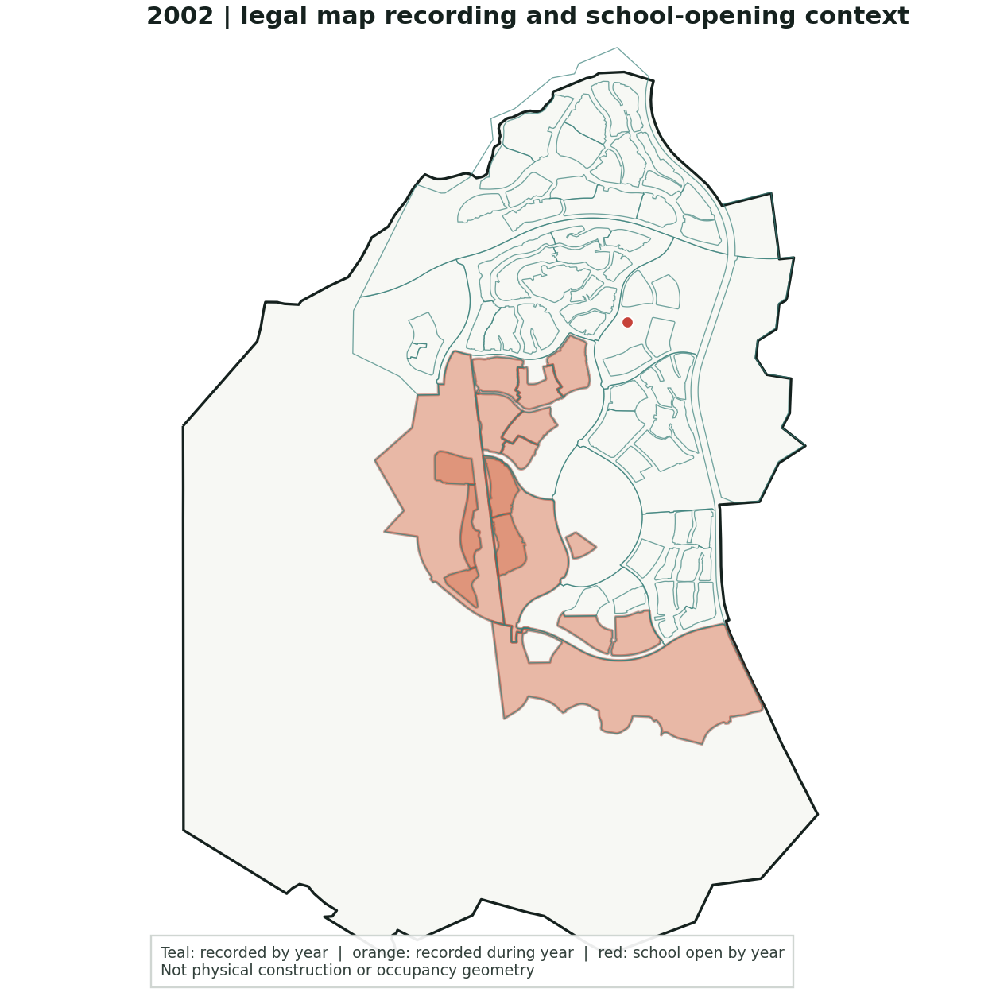
Derived: 17 legal tract maps recorded this year; 76 cumulatively. Not a physical lifecycle state.
No supported active-construction geometry. Empty means unsupported, not absent.
No supported residential geometry. Community milestones are not assigned to tracts or villages.
Open IDs: LH-SCHOOL-CHAPARRAL. Historical attendance boundaries were not retrieved.
Avendale Village Clubhouse opens
not located. No public, locally archived image supports an annual state; zero coverage is not evidence of no construction.
Blocked. Zero comparisons calculated because subject and target geometry gates are unsatisfied.
John Wayne Airport: 2.387 m/s mean speed; 11.84% easterly; 30.39% westerly; 93.63% valid-speed coverage. Regional station context; not downscaled.
2018 median elevation 148.3 m; median slope 4.24 degrees. Post-study context, not a 2002 surface.
medium. Annual records are evidence manifests; unchanged or unavailable fields do not imply historical absence.
No year-linked conflict in the registry.
Construction, habitability, and occupancy geometry; attendance boundaries; historical facility footprints.
| Date | Milestone | Class | Confidence | Sources | Limits |
|---|---|---|---|---|---|
| 2002-03-01 | 2488 total new homes sold | documented_exact | medium | LH-SRC-LARMAC-TIMELINE | Timeline reports 942 new and 54 neighborhoods open |
| 2002-06-01 | Avendale Village Clubhouse opens | documented_exact | medium | LH-SRC-LARMAC-TIMELINE | Exact day not published |
active construction and occupancy
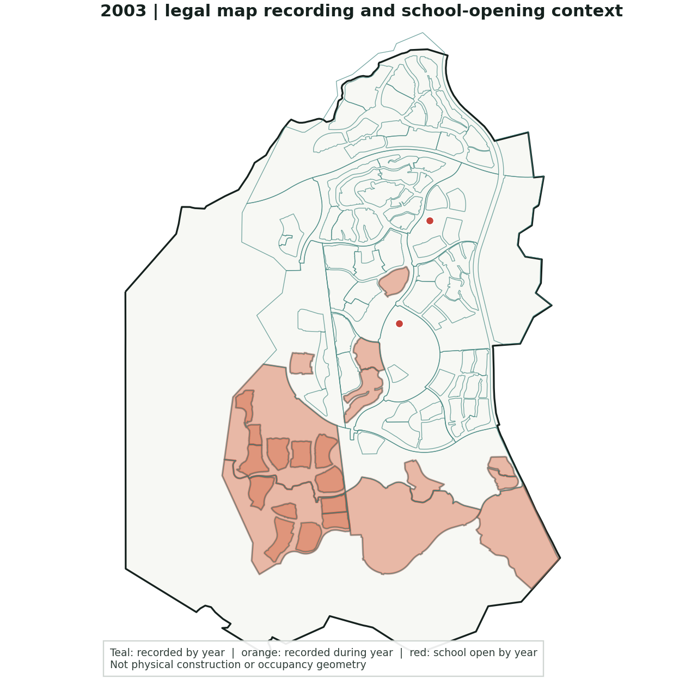
Derived: 23 legal tract maps recorded this year; 99 cumulatively. Not a physical lifecycle state.
No supported active-construction geometry. Empty means unsupported, not absent.
No supported residential geometry. Community milestones are not assigned to tracts or villages.
Open IDs: LH-SCHOOL-CHAPARRAL;LH-SCHOOL-LRES;LH-SCHOOL-LRMS. Historical attendance boundaries were not retrieved.
Founders Park opens; Ladera Ranch Library opens; Ladera Ranch School opens
not located. No public, locally archived image supports an annual state; zero coverage is not evidence of no construction.
Blocked. Zero comparisons calculated because subject and target geometry gates are unsatisfied.
John Wayne Airport: 2.244 m/s mean speed; 12.29% easterly; 28.47% westerly; 97.98% valid-speed coverage. Regional station context; not downscaled.
2018 median elevation 148.3 m; median slope 4.24 degrees. Post-study context, not a 2003 surface.
high. Annual records are evidence manifests; unchanged or unavailable fields do not imply historical absence.
LH-CONFLICT-SHARED-SCHOOL-OPENING
Construction, habitability, and occupancy geometry; attendance boundaries; historical facility footprints.
| Date | Milestone | Class | Confidence | Sources | Limits |
|---|---|---|---|---|---|
| 2003-04-01 | 3987 total new homes sold | documented_exact | medium | LH-SRC-LARMAC-TIMELINE | Timeline also reports population 6112 |
| 2003-07-01 | Founders Park opens | documented_exact | medium | LH-SRC-LARMAC-TIMELINE | Community timeline month conflicts with school reports exact August 27 opening; events are preserved separately |
| 2003-07-01 | Ladera Ranch Library opens | documented_exact | medium | LH-SRC-LARMAC-TIMELINE | Exact day not published |
| 2003-07-30 | Ladera Planned Community Program revised | documented_exact | high | LH-SRC-OC-PC | Statistical summary amended by Orange County Planning Commission |
| 2003-08-27 | Ladera Ranch School opens | documented_exact | high | LH-SRC-CUSD-LRES LH-SRC-CUSD-LRMS | Shared elementary and middle campus |
LH-SRC-CUSD-LRES LH-SRC-CUSD-LRMS LH-SRC-LARMAC-TIMELINE LH-SRC-OC-PC
active construction and occupancy
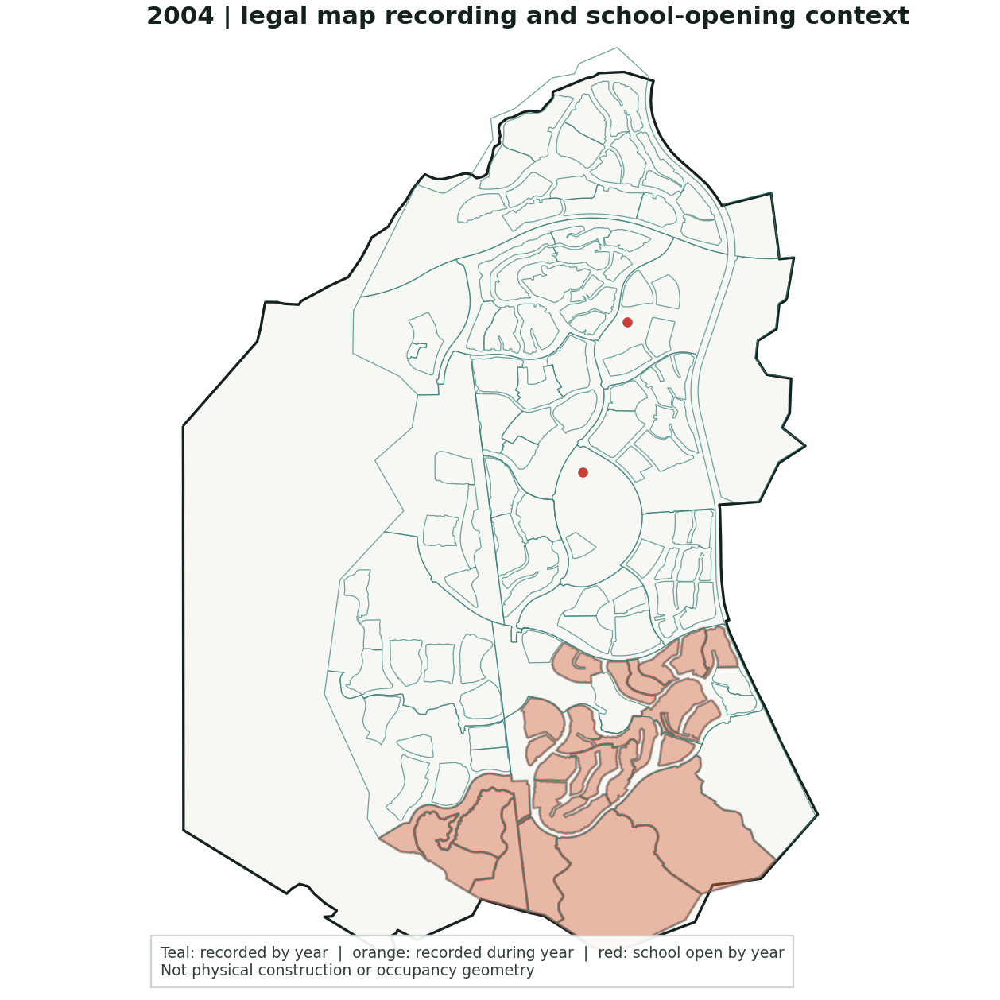
Derived: 22 legal tract maps recorded this year; 121 cumulatively. Not a physical lifecycle state.
No supported active-construction geometry. Empty means unsupported, not absent.
No supported residential geometry. Community milestones are not assigned to tracts or villages.
Open IDs: LH-SCHOOL-CHAPARRAL;LH-SCHOOL-LRES;LH-SCHOOL-LRMS. Historical attendance boundaries were not retrieved.
Ladera Ranch School splits into elementary and middle schools; Flintridge and Covenant Hills village clubhouses open
not located. No public, locally archived image supports an annual state; zero coverage is not evidence of no construction.
Blocked. Zero comparisons calculated because subject and target geometry gates are unsatisfied.
John Wayne Airport: 2.333 m/s mean speed; 15.44% easterly; 24.74% westerly; 97.96% valid-speed coverage. Regional station context; not downscaled.
2018 median elevation 148.3 m; median slope 4.24 degrees. Post-study context, not a 2004 surface.
medium. Annual records are evidence manifests; unchanged or unavailable fields do not imply historical absence.
No year-linked conflict in the registry.
Construction, habitability, and occupancy geometry; attendance boundaries; historical facility footprints.
| Date | Milestone | Class | Confidence | Sources | Limits |
|---|---|---|---|---|---|
| 2004-01-01 | 5087 total new homes sold | documented_exact | medium | LH-SRC-LARMAC-TIMELINE | Timeline reports 1100 new homes since prior milestone |
| 2004-01-01 | Ladera Ranch School splits into elementary and middle schools | documented_exact | high | LH-SRC-CUSD-LRMS | Exact date not published |
| 2004-12-01 | Flintridge and Covenant Hills village clubhouses open | documented_exact | medium | LH-SRC-LARMAC-TIMELINE | Exact days not published |
active construction and occupancy
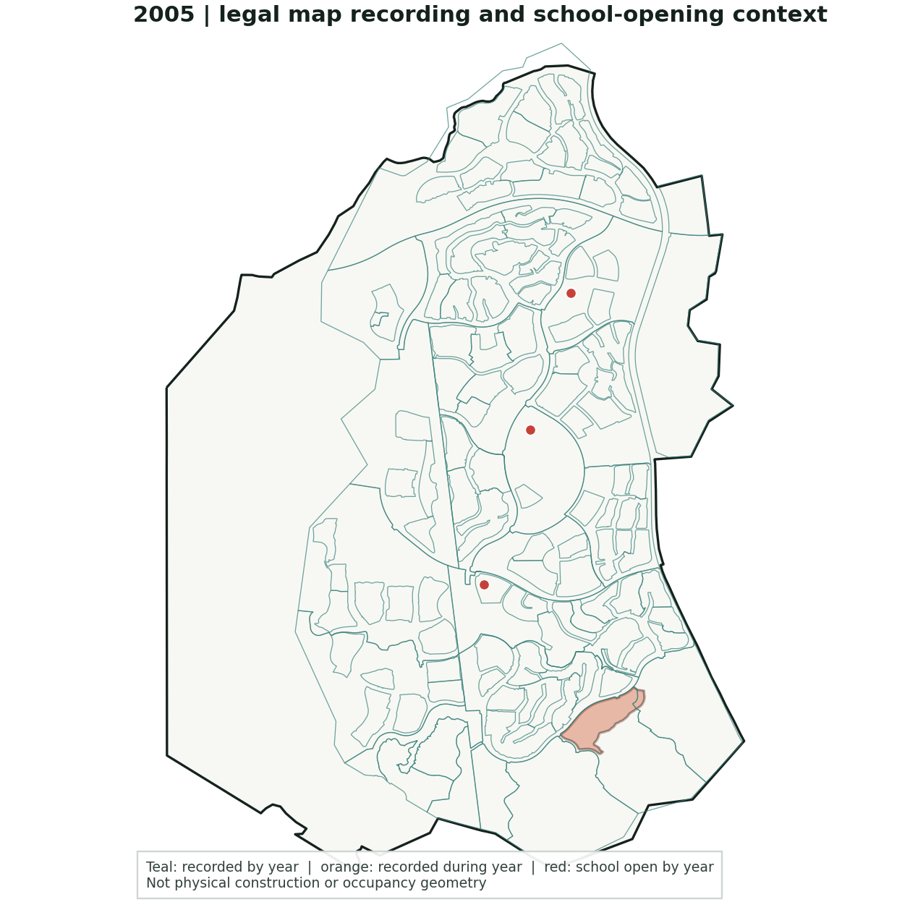
Derived: 1 legal tract maps recorded this year; 122 cumulatively. Not a physical lifecycle state.
No supported active-construction geometry. Empty means unsupported, not absent.
No supported residential geometry. Community milestones are not assigned to tracts or villages.
Open IDs: LH-SCHOOL-CHAPARRAL;LH-SCHOOL-LRES;LH-SCHOOL-LRMS;LH-SCHOOL-OSO-GRANDE. Historical attendance boundaries were not retrieved.
Oso Grande Elementary opens; Skate Park Wagsdale Park and Terramor Water Park open
not located. No public, locally archived image supports an annual state; zero coverage is not evidence of no construction.
Blocked. Zero comparisons calculated because subject and target geometry gates are unsatisfied.
John Wayne Airport: 2.113 m/s mean speed; 13.78% easterly; 29.07% westerly; 100.00% valid-speed coverage. Regional station context; not downscaled.
2018 median elevation 148.3 m; median slope 4.24 degrees. Post-study context, not a 2005 surface.
high. Annual records are evidence manifests; unchanged or unavailable fields do not imply historical absence.
No year-linked conflict in the registry.
Construction, habitability, and occupancy geometry; attendance boundaries; historical facility footprints.
| Date | Milestone | Class | Confidence | Sources | Limits |
|---|---|---|---|---|---|
| 2005-02-01 | 5879 total new homes sold | documented_exact | medium | LH-SRC-LARMAC-TIMELINE | Timeline reports 792 new homes since prior milestone |
| 2005-08-24 | Oso Grande Elementary opens | documented_exact | high | LH-SRC-CDE-OSO | Official registry date |
| 2005-11-01 | Skate Park Wagsdale Park and Terramor Water Park open | documented_exact | medium | LH-SRC-LARMAC-TIMELINE | Exact days not published |
substantially complete
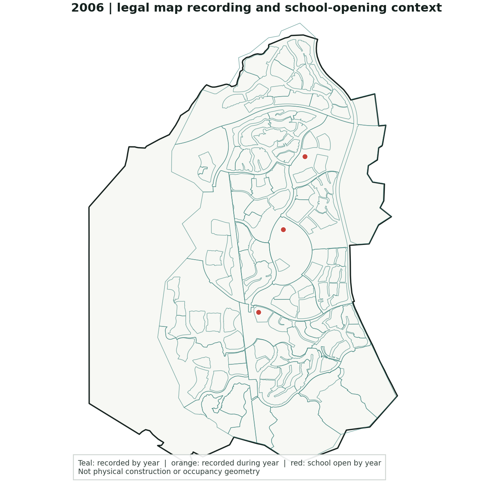
Derived: 0 legal tract maps recorded this year; 122 cumulatively. Not a physical lifecycle state.
No supported active-construction geometry. Empty means unsupported, not absent.
No supported residential geometry. Community milestones are not assigned to tracts or villages.
Open IDs: LH-SCHOOL-CHAPARRAL;LH-SCHOOL-LRES;LH-SCHOOL-LRMS;LH-SCHOOL-OSO-GRANDE. Historical attendance boundaries were not retrieved.
No new dated facility or infrastructure milestone.
not located. No public, locally archived image supports an annual state; zero coverage is not evidence of no construction.
Blocked. Zero comparisons calculated because subject and target geometry gates are unsatisfied.
John Wayne Airport: 2.240 m/s mean speed; 11.59% easterly; 31.02% westerly; 99.97% valid-speed coverage. Regional station context; not downscaled.
2018 median elevation 148.3 m; median slope 4.24 degrees. Post-study context, not a 2006 surface.
medium. Annual records are evidence manifests; unchanged or unavailable fields do not imply historical absence.
No year-linked conflict in the registry.
Construction, habitability, and occupancy geometry; attendance boundaries; historical facility footprints.
| Date | Milestone | Class | Confidence | Sources | Limits |
|---|---|---|---|---|---|
| 2006-03-01 | 6380 total new homes sold | documented_exact | medium | LH-SRC-LARMAC-TIMELINE | Timeline reports 501 new homes since prior milestone |
| 2006-01-01 | Community substantially completed | documented_approximate | medium | LH-SRC-ULI-CASE | Custom lots and later sales remained |
sold out except custom
Derived: 0 legal tract maps recorded this year; 122 cumulatively. Not a physical lifecycle state.
No supported active-construction geometry. Empty means unsupported, not absent.
No supported residential geometry. Community milestones are not assigned to tracts or villages.
Open IDs: LH-SCHOOL-CHAPARRAL;LH-SCHOOL-LRES;LH-SCHOOL-LRMS;LH-SCHOOL-OSO-GRANDE. Historical attendance boundaries were not retrieved.
No new dated facility or infrastructure milestone.
not located. No public, locally archived image supports an annual state; zero coverage is not evidence of no construction.
Blocked. Zero comparisons calculated because subject and target geometry gates are unsatisfied.
John Wayne Airport: 2.328 m/s mean speed; 12.58% easterly; 28.52% westerly; 100.00% valid-speed coverage. Regional station context; not downscaled.
2018 median elevation 148.3 m; median slope 4.24 degrees. Post-study context, not a 2007 surface.
medium. Annual records are evidence manifests; unchanged or unavailable fields do not imply historical absence.
No year-linked conflict in the registry.
Construction, habitability, and occupancy geometry; attendance boundaries; historical facility footprints.
| Date | Milestone | Class | Confidence | Sources | Limits |
|---|---|---|---|---|---|
| 2007-04-01 | Community sells out except custom lots | documented_exact | medium | LH-SRC-LARMAC-TIMELINE | Timeline reports 6585 total new homes sold |
late custom lot phase
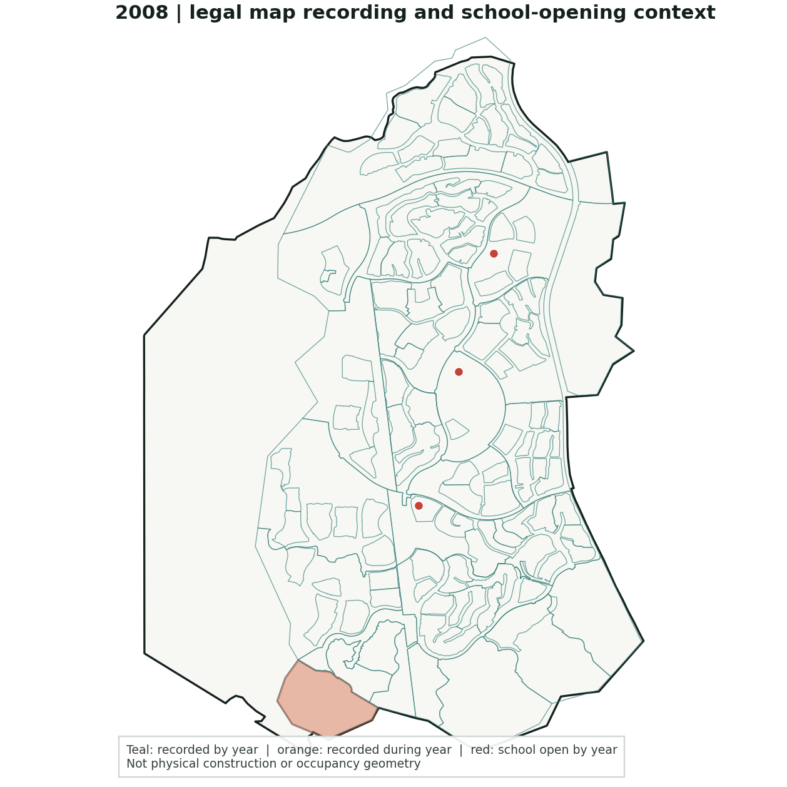
Derived: 1 legal tract maps recorded this year; 123 cumulatively. Not a physical lifecycle state.
No supported active-construction geometry. Empty means unsupported, not absent.
No supported residential geometry. Community milestones are not assigned to tracts or villages.
Open IDs: LH-SCHOOL-CHAPARRAL;LH-SCHOOL-LRES;LH-SCHOOL-LRMS;LH-SCHOOL-OSO-GRANDE. Historical attendance boundaries were not retrieved.
No new dated facility or infrastructure milestone.
not located. No public, locally archived image supports an annual state; zero coverage is not evidence of no construction.
Blocked. Zero comparisons calculated because subject and target geometry gates are unsatisfied.
John Wayne Airport: 2.051 m/s mean speed; 11.81% easterly; 30.85% westerly; 99.74% valid-speed coverage. Regional station context; not downscaled.
2018 median elevation 148.3 m; median slope 4.24 degrees. Post-study context, not a 2008 surface.
medium. Annual records are evidence manifests; unchanged or unavailable fields do not imply historical absence.
No year-linked conflict in the registry.
Construction, habitability, and occupancy geometry; attendance boundaries; historical facility footprints.
| Date | Milestone | Class | Confidence | Sources | Limits |
|---|---|---|---|---|---|
| 2008-01-01 | 6631 total new homes sold | documented_exact | medium | LH-SRC-LARMAC-TIMELINE | Later custom-lot completion remains unresolved |
no new community state established
Derived: 0 legal tract maps recorded this year; 123 cumulatively. Not a physical lifecycle state.
No supported active-construction geometry. Empty means unsupported, not absent.
No supported residential geometry. Community milestones are not assigned to tracts or villages.
Open IDs: LH-SCHOOL-CHAPARRAL;LH-SCHOOL-LRES;LH-SCHOOL-LRMS;LH-SCHOOL-OSO-GRANDE. Historical attendance boundaries were not retrieved.
No new dated facility or infrastructure milestone.
not located. No public, locally archived image supports an annual state; zero coverage is not evidence of no construction.
Blocked. Zero comparisons calculated because subject and target geometry gates are unsatisfied.
John Wayne Airport: 1.944 m/s mean speed; 10.95% easterly; 33.44% westerly; 99.97% valid-speed coverage. Regional station context; not downscaled.
2018 median elevation 148.3 m; median slope 4.24 degrees. Post-study context, not a 2009 surface.
unknown. Annual records are evidence manifests; unchanged or unavailable fields do not imply historical absence.
No year-linked conflict in the registry.
Construction, habitability, and occupancy geometry; attendance boundaries; historical facility footprints.
No new dated community event is registered for this year.
No source registered
no new community state established
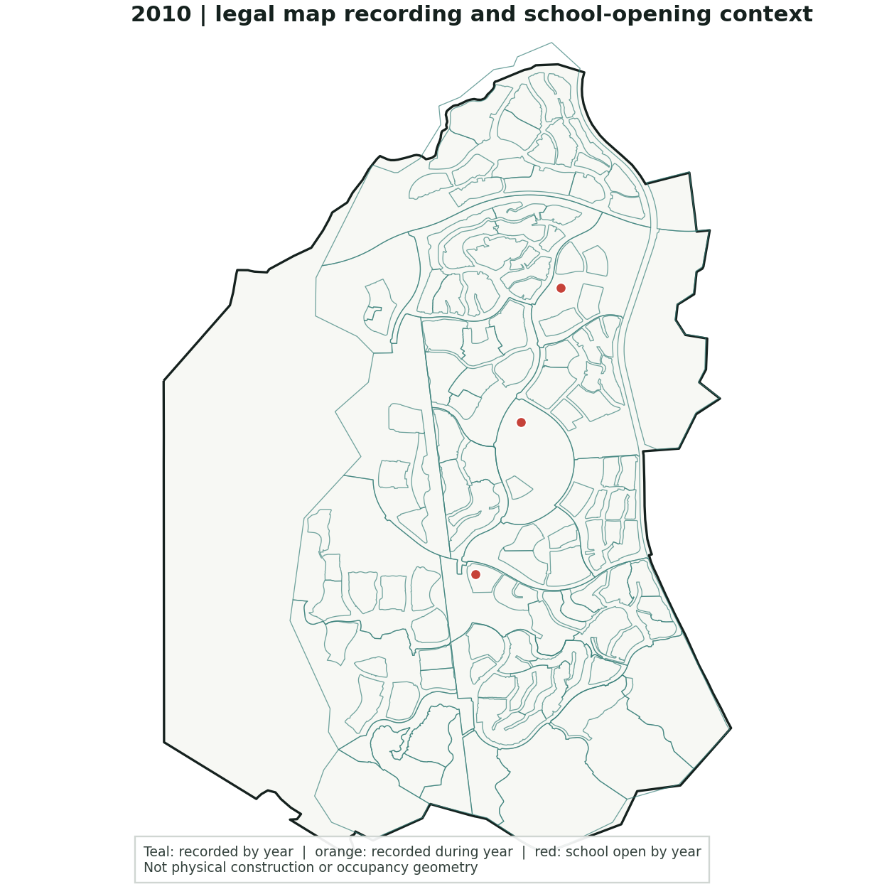
Derived: 0 legal tract maps recorded this year; 123 cumulatively. Not a physical lifecycle state.
No supported active-construction geometry. Empty means unsupported, not absent.
No supported residential geometry. Community milestones are not assigned to tracts or villages.
Open IDs: LH-SCHOOL-CHAPARRAL;LH-SCHOOL-LRES;LH-SCHOOL-LRMS;LH-SCHOOL-OSO-GRANDE. Historical attendance boundaries were not retrieved.
No new dated facility or infrastructure milestone.
not located. No public, locally archived image supports an annual state; zero coverage is not evidence of no construction.
Blocked. Zero comparisons calculated because subject and target geometry gates are unsatisfied.
John Wayne Airport: 2.022 m/s mean speed; 11.92% easterly; 32.21% westerly; 99.98% valid-speed coverage. Regional station context; not downscaled.
2018 median elevation 148.3 m; median slope 4.24 degrees. Post-study context, not a 2010 surface.
unknown. Annual records are evidence manifests; unchanged or unavailable fields do not imply historical absence.
No year-linked conflict in the registry.
Construction, habitability, and occupancy geometry; attendance boundaries; historical facility footprints.
No new dated community event is registered for this year.
No source registered
Conflict registry
| ID | Subject | Conflict | Resolution | Status |
|---|---|---|---|---|
| LH-CONFLICT-EIR-APPROVAL-DATE | LH-FEAT-COMMUNITY | different_entitlement_milestones_or_date_conflict | Preserve both; use 1995-10-17 only for EIR certification and leave the 1997 action unresolved. | open_scope_distinction |
| LH-CONFLICT-SHARED-SCHOOL-OPENING | LH-SCHOOL-LRES;LH-SCHOOL-LRMS | month_grouping_versus_exact_date | Use 2003-08-27 for the school opening; retain July community park/library milestones separately. | resolved_by_authoritative_source |
Gap review
| Priority | Topic | Scope | Evidence needed | Access | Follow-up |
|---|---|---|---|---|---|
| critical | tract_lifecycle | 123 tracts | grading, building, final, and occupancy records | private_or_manual_record_request | Request and archive the named record class; preserve a no-record response if applicable. |
| critical | historical_imagery | 1999-2010 annual states | dated overlapping aerial frames | account_or_manual_archive_search | Request and archive the named record class; preserve a no-record response if applicable. |
| critical | occupancy_geometry | residential areas | certificates of occupancy, closings, or address-level activation | nonpublic_or_manual_record_request | Request and archive the named record class; preserve a no-record response if applicable. |
| critical | construction_geometry | active development areas | dated grading/as-built plans or adjacent imagery | manual_record_request | Request and archive the named record class; preserve a no-record response if applicable. |
| high | tract_hierarchy | 123 tracts | planning-area, village, neighborhood, builder/product crosswalk | manual_crosswalk_and_records | Request and archive the named record class; preserve a no-record response if applicable. |
| high | school_boundaries | 1997-2010 attendance assignments | dated attendance maps and board actions | manual_district_request | Request and archive the named record class; preserve a no-record response if applicable. |
| high | roads | community streets and arterials | construction, partial opening, full opening, and access records | manual_record_request | Request and archive the named record class; preserve a no-record response if applicable. |
| high | haul_routes | construction access | explicit approved route plans | manual_record_request | Request and archive the named record class; preserve a no-record response if applicable. |
| medium | parks_facilities | community amenities | construction windows and historical footprints | manual_archive_search | Request and archive the named record class; preserve a no-record response if applicable. |
| medium | commercial | Bridgepark and later centers | tenant openings, construction intervals, historical footprints | manual_archive_search | Request and archive the named record class; preserve a no-record response if applicable. |
| medium | terrain_vertical_units | 2018 DEM | explicit band-value unit or vertical datum | metadata_clarification | Request and archive the named record class; preserve a no-record response if applicable. |
| medium | wind_locality | Ladera Ranch | on-site study-period station observations | not_located_publicly | Request and archive the named record class; preserve a no-record response if applicable. |
Bibliography
LH-SRC-OC-PC | A2
County of Orange OC Development Services
LH-SRC-OC-MAP | A2
County of Orange OC Development Services
LH-SRC-OC-DA | A2
County of Orange OC Development Services
LH-SRC-OC-ADS | A2
County of Orange OC Development Services
LH-SRC-CENSUS-CDP | A1
TIGERweb US Census Bureau
LH-SRC-OC-TRACTS | A1
OC Public Works, OC Survey, Geospatial Services
LH-SRC-OC-IMAGERY | A1
OC Public Works, OC Survey, Geospatial Services
LH-SRC-CEQANET-UTILITIES | A2
California State Clearinghouse / Santa Margarita Water District
LH-SRC-RMV-PLANNING | B2
Rancho Mission Viejo
LH-SRC-LARMAC-TIMELINE | B2
Ladera Ranch Maintenance Corporation
LH-SRC-ULI-CASE | B1
Urban Land Institute
LH-SRC-CUSD-CHAPARRAL | A2
Capistrano Unified School District
LH-SRC-CUSD-LRES | A2
Capistrano Unified School District
LH-SRC-CUSD-LRMS | A2
Capistrano Unified School District
LH-SRC-CDE-OSO | A1
California Department of Education
LH-SRC-NWS-ELTORO | A2
National Weather Service San Diego
LH-SRC-NWS-SANTA-ANA | A2
National Weather Service
LH-SRC-OSM-SCHOOLS | B2
OpenStreetMap contributors
LH-SRC-OC-EIR-CERT | A2
County of Orange OC Development Services
LH-SRC-OC-LMS-TRACT-PDFS | A1
OC Public Works, OC Survey, Geospatial Services
LH-SRC-NOAA-ISD-HISTORY | A1
NOAA National Centers for Environmental Information
LH-SRC-NOAA-GLOBAL-HOURLY | A1
NOAA National Centers for Environmental Information
LH-SRC-OC-DEM-2018 | A1
Orange County Public Works OC Survey
LH-SRC-OC-WATERSHEDS | A1
Orange County Public Works
LH-SRC-OC-STREAMS-2016 | A1
Orange County Public Works
LH-SRC-OC-FLOOD-CHANNELS | A1
Orange County Public Works
LH-SRC-DGS-DSA-TRACKER | A1
California Department of General Services, Division of the State Architect